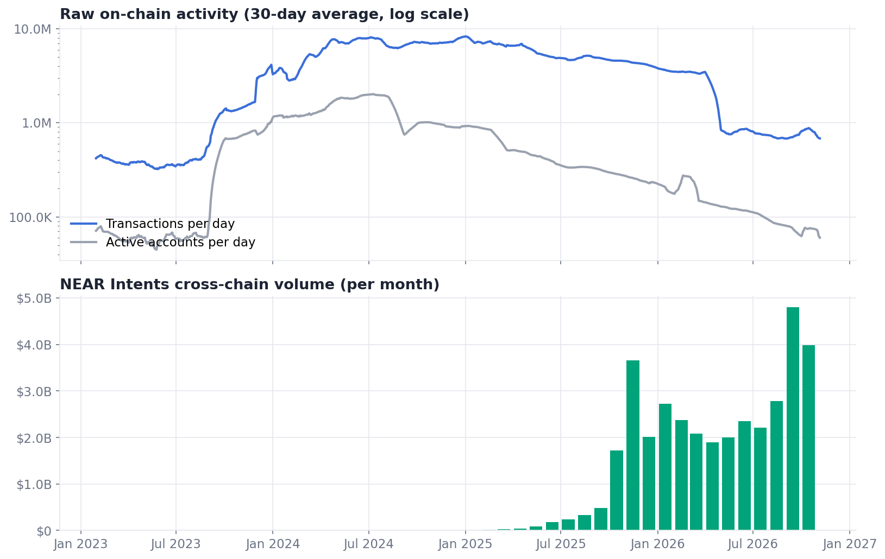
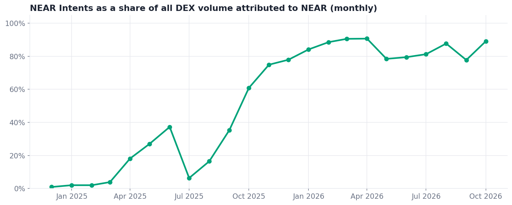
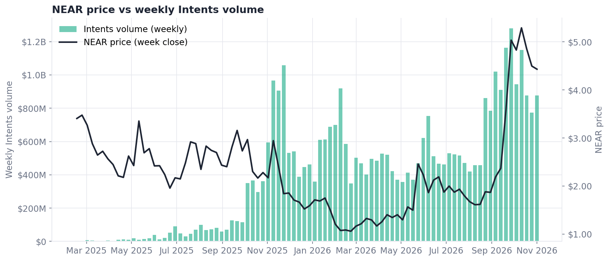
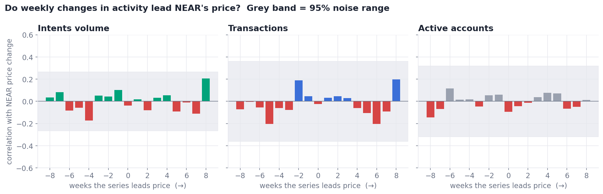
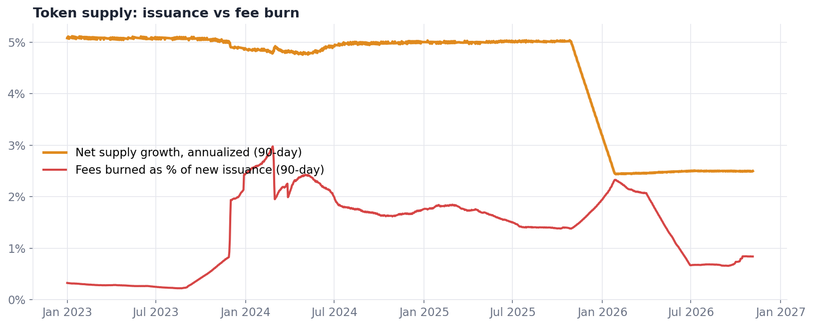
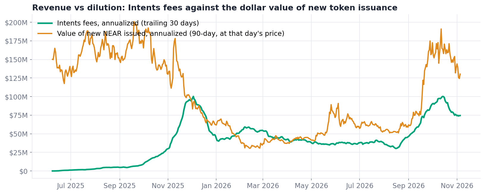

NEAR: usage moved to Intents. Has value capture followed?
Snapshot 2026-11-05 · every number and chart is rebuilt from public, keyless data with python build.py · built at NEAR HACKATHON (Investment Thesis track)
Tested over 89 weeks (2025-02-08 → 2026-11-05). Intents is real, fee-paying demand; the token's link to it is not visible in the data yet. Full argument, counter-evidence and falsifiers: THESIS.md.
Usage moved: raw activity fell, Intents rose

Daily transactions are down 91.8% from their Jan 2025 peak and active accounts are down 97%, while monthly Intents volume went from $6.4M (Jan 2025) to $4.8B (Sep 2026).
Source and method
https://api.nearblocks.io/v1/charts → txns, active_accounts (30-day mean)https://api.llama.fi/summary/dexs/near-intents → monthly sum
Intents is now most of NEAR's trading

Over the last 90 days, NEAR Intents was 83.9% of all DEX volume DefiLlama attributes to the NEAR chain.
Source and method
https://api.llama.fi/summary/dexs/near-intentshttps://api.llama.fi/overview/dexs/nearshare = Intents ÷ NEAR DEX volume, monthly
Price vs Intents, week by week

Week-over-week changes in Intents volume and in NEAR's price are essentially uncorrelated (same-week correlation -0.04).
Source and method
https://api.nearblocks.io/v1/charts → near_price (weekly close)https://api.llama.fi/summary/dexs/near-intents → weekly sum
The test: does any activity series lead price?

No bar leaves the grey noise band for any series: over 89 weeks, none of them moves with or ahead of NEAR's price (Intents best: 0.205 at lag 8 vs a noise band of ±0.266).
Source and method
weekly log-changes, corr(series[t−lag], price[t]) for lag −8…+895% band: max |corr| under 2,000 circular-shift permutations (seed 7)
Issuance vs burn

Net supply now grows about 2.5% a year (it averaged 4.91% in 2024), and fee burn offsets only 0.84% of new issuance.
Source and method
https://api.nearblocks.io/v1/charts → total_supply, txn_fee (yoctoNEAR ÷ 1e24)burn = 70% of transaction fees (NEAR protocol rule)
Revenue vs dilution

Annualized Intents fees ($74.5M) equal 57.8% of the dollar value of NEAR issued over the last year ($128.9M at today's price); on 68 of 309 days in 2026, fees ran above issuance. Whether those fees reach NEAR holders is not visible in this data.
Source and method
https://api.llama.fi/summary/fees/near-intents → 30-day sum × 365/30https://api.nearblocks.io/v1/charts → supply change + burn, × price